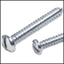
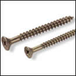
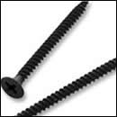
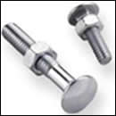
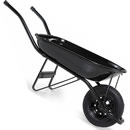
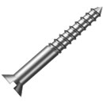
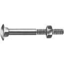
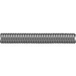
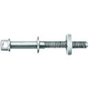
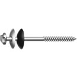

Parafuso auto atarraxante
2,9 x 13 mm

parafuso para aglomerado e mdf
35 x 20 mm
ou
35 x 14 mm
ou
35 x 14 mm

parafuso para drywall
3,5 x 25 mm
ou
3.5 x 35 mm
ou
3.5 x 35 mm

parafuso frances com porca
14 x 1 ½
ou
14 x 1
ou
14 x 1
 parafuso rosca maquina
1.4 x 12 x2
parafuso rosca maquina
1.4 x 12 x2ou
14 x 12 x1
 parafuso sextavado
1.4 x ½,
parafuso sextavado
1.4 x ½,3.16 x 1
ou
1.4 x 78

CARRO DE MÃO
Pneu com câmara ou Pneu maciço.

PARAFUSO FENDA
Diversas dimensões e tamanhos.

PARAFUSO FRANCÊS COM PORCA
Diversas dimensões e tamanhos.

BARRA ROSCADA ZINCADA
Disponibilidade: 1/2 X 1000, 1/4 X 1000, 3/16 X 1000, 3/8 X 1000 e 5/16 X 1000.

PARAFUSO P/CAMA FURADO ZINCO
Disponbilidade: 5/16 X 110 e 5/16 X 120.

PARAFUSO KIT TELHEIRO
Disponibilidade: 5/16X110MM.
 Vergalhão
Diâmetros disponíveis:
Vergalhão
Diâmetros disponíveis:6,3mm.
8,0mm.
10,0mm.
12,5mm.
16,0mm.
20,0mm.
25,0mm.
32,0mm.
40,0mm.